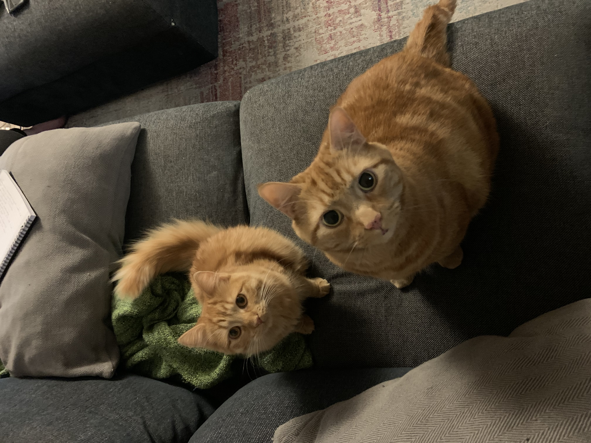

I am originally from Huddersfield, West Yorkshire. I grew up playing drums, recording music with my friends, playing video games, and tinkering with computers.
In 2010 I moved to Newcastle upon Tyne for University. Here I enjoyed going to the pub, and joined the Newcastle University Theatre Society (NUTS). I was a technical director for several shows, mostly musicals, where I used my skills in recording music, and my understanding in signals and sound-waves from my degree to create sound effects, and run the sounds for shows involving multiple microphones from cast and band members.
NUTS is where I met my Fiancé, Elie. We moved to London in 2017 and live in Croydon with our rescue cats. We love to go to the theatre, and see all the plays and musicals we can, and to see our favourite bands and artists when they are touring, especially Foo Fighters. We are fans of Crystal Palace FC and try to get to Selhurst Park to see matches as often as we can.
